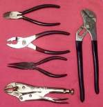
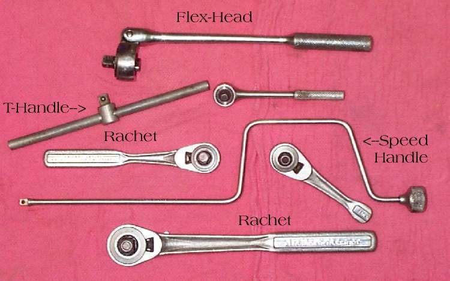
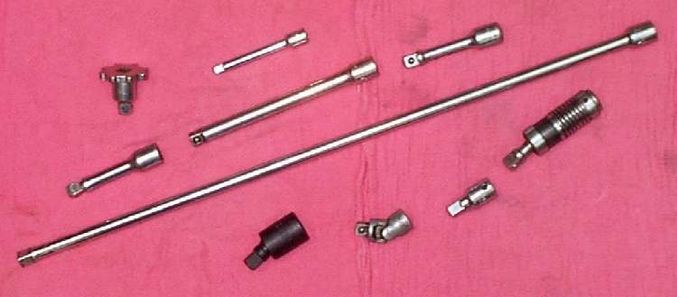
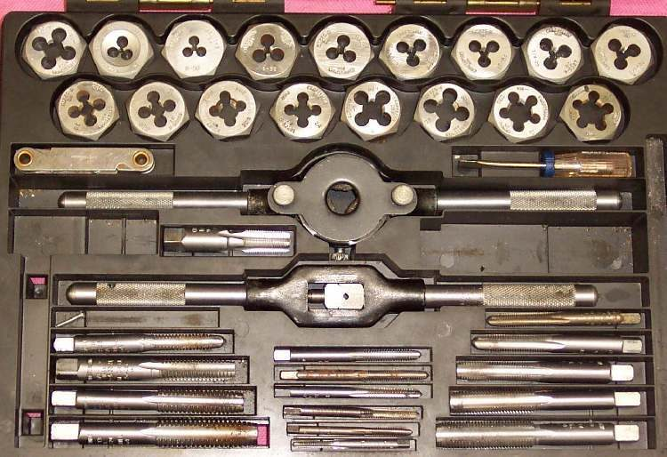

A small set of ordinary hand tools does most repair work. New, shiny tools are not needed: a bolt comes undone just as well with a used spanner. Start with the list below, then add a tool only when a job needs it. Used and second-hand tools are a cheap way to start.
Safety
- Use a tool that fits the fastener. A loose fit slips and takes skin off knuckles.
- Do not use a screwdriver as a chisel or lever on anything that matters (brakes, wiring, seals).
- Wear eye protection when hammering, grinding or using a wire brush.
You need
A starter kit, in the order most jobs need it:
- Combination spanners (open one end, ring the other) in the metric sizes your bike uses. Check the sizes on your own bike first. Two of each size help when a nut and bolt both turn.
- Sockets, preferably 6-point, with a ratchet handle, a T-handle and several extensions. Mid-size drives suit most bike work.
- Screwdrivers: flat and cross-head (Phillips), small to large. Check the head type on your bike (hex socket, star and square heads also occur).
- Hex (Allen) keys, metric and inch if the bike has any inch fasteners.
- Pliers: needle-nose, slip-joint and a locking type.
- A hammer, preferably with a soft face or a brass drift for tapping parts without damage.
- An impact driver and bits: see Loosen a tight screw with an impact driver.
- A torque wrench when you start tightening critical bolts: see Use a torque wrench correctly.
- A long pry bar or large screwdriver, a feeler gauge set, a tyre pressure gauge and a torch.
Add later, as jobs need them: circlip pliers (inner and outer types), a tap and die set for cleaning threads, a multimeter, calipers, and a soldering iron for wiring and cable ends.
Steps
- Look at the fasteners on your bike. Note the spanner and socket sizes and screw types that appear most.
- Buy or borrow the matching spanners and sockets first. Buy the cheaper tools before the expensive ones.
- Before buying a costly tool, ask three questions: will it save time, save money, or earn money? If none, wait.
- Keep the kit in one box, clean and dry. A light film of oil on bare steel stops rust.
- Check the tools before each job. Replace a spanner with worn jaws or a screwdriver with a rounded tip.
Check your work
- Each common fastener on your bike has a tool that fits it with no play.
- You can finish a basic service (oil, chain, plug, air filter) with the kit.
If it did not fix the problem
- A fastener still will not move: Remove a rounded, seized or broken fastener.
- A job needs a tool you do not have: Buy, borrow or make a special tool.